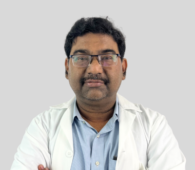

సర్జరీకి ముందు మరో అభిప్రాయం A second opinion before surgery
"ఆపరేషన్ వెనక్కి తీసుకోలేం. అందుకే ముందు, ఇది సరైన అడుగేనా అని మరోసారి చూసుకోవడం తెలివైన పని." "An operation cannot be undone. So before it, looking once more at whether it is the right step is a sensible thing to do."
సర్జరీకి ముందు సెకండ్ ఒపీనియన్ అంటే మరో సర్జన్ మీ రోగ నిర్ధారణ, రిపోర్టులు, ఆపరేషన్ ప్రణాళికను సమీక్షించడం. ఇది మీ మొదటి వైద్యుడిని తిరస్కరించడం కాదు, ప్రణాళికను నిర్ధారించుకోవడం. నేను డా. మురళీధర్ ముద్దుసెట్టి. మీ బయాప్సీ రిపోర్ట్, బ్లాక్లు, CT లేదా PET-CT, పాత సమ్మరీలను వాట్సాప్లో పంపండి, నేను చూసి నిజాయితీగా చెబుతాను. A second opinion before surgery means another surgeon reviews your diagnosis, reports, and operation plan. It is not a rejection of your first doctor, it is a way to confirm the plan. I am Dr. Muralidhar Muddusetty. Send your biopsy report, blocks, CT or PET-CT and prior summaries on WhatsApp, and I will look at them and tell you honestly what I think.
సర్జరీ ముందు మరో అభిప్రాయం ఎందుకు సహేతుకంWhy a second surgical opinion is reasonable
చాలా కుటుంబాలు సెకండ్ ఒపీనియన్ తీసుకుంటే మొదటి వైద్యుడు బాధపడతారని భయపడతారు. నిజానికి అది అలా కాదు. ఒక ఆపరేషన్ పెద్ద నిర్ణయం, అది వెనక్కి తీసుకోలేనిది. అలాంటి దానిని ముందు మరో సర్జన్తో ఒకసారి చూసుకోవడాన్ని మంచి వైద్యులు ఆశిస్తారు. మీరు వ్యక్తిని కాదు, ప్రణాళికను తనిఖీ చేస్తున్నారు. Many families worry that taking a second opinion will upset their first doctor. It really does not. An operation is a big decision, and it cannot be undone. Good surgeons expect a patient to look at such a step with another surgeon first. You are checking the plan, not the person.
సర్జరీలో ముఖ్యమైన ప్రశ్నలు కొన్ని ఉంటాయి. ఈ ట్యూమర్ను ఇప్పుడే తీసేయాలా, లేక కీమో లేదా రేడియేషన్ ముందు ఇస్తే మెరుగ్గా ఉంటుందా. ఆపరేషన్ ఎంత పెద్దది కావాలి. మంచి మార్జిన్తో పూర్తిగా తీసేయడం సాధ్యమేనా. ఆపరేషన్కు అంగీకరించే ముందు ఈ ప్రశ్నలకు స్పష్టమైన సమాధానం ఉండటం విలువైనది. Surgery carries a few important questions. Should this tumour be removed now, or would it be better to give chemotherapy or radiation first. How large the operation needs to be. Whether it can be taken out completely with a clean margin. Before you agree to an operation, it is worth having clear answers to these.
నా పని మీ వైద్యుడిని తప్పు పట్టడం కాదు. ఒకే రిపోర్టులను రెండు అనుభవజ్ఞులైన కళ్ళు చూస్తే, ఏదైనా మిగిలిన పరీక్ష ఉందా, మరో ఎంపిక ఉందా అని తెలుస్తుంది. ఉంటే చెబుతాను. లేకపోతే మీ ప్రణాళిక సరైనదని స్పష్టంగా చెబుతాను. చాలాసార్లు సెకండ్ ఒపీనియన్ మొదటి వైద్యుడు చెప్పిందే నిర్ధారిస్తుంది, అది మీకు మనశ్శాంతిని ఇస్తుంది. My job is not to find fault with your doctor. When two experienced sets of eyes look at the same reports, it becomes clearer whether a test is missing or another option exists. If there is one, I will tell you. If not, I will say plainly that your plan is sound. Quite often a second opinion simply confirms what your first doctor said, and that gives you peace of mind.
ఏమి తీసుకురావాలి లేదా పంపాలిWhat to bring or send
ఇవి ఉంటే పంపండిBring these if you have them
- బయాప్సీ రిపోర్ట్, వీలైతే పారాఫిన్ బ్లాక్లు / స్లైడ్లుBiopsy report, and the paraffin blocks or slides if available
- CT లేదా PET-CT చిత్రాలు (CD / DICOM)CT or PET-CT images (CD / DICOM)
- పాత ప్రిస్క్రిప్షన్లు మరియు డిశ్చార్జ్ సమ్మరీలుPrior prescriptions and discharge summaries
అన్నీ ఒకేసారి దొరకకపోతే ఆందోళన పడకండి. మీ దగ్గర ఉన్నవి పంపండి, ఇంకా ఏమి సేకరించాలో మా టీమ్ చెబుతుంది. స్కాన్ల అసలు DICOM ఫైళ్లు ఉంటే ఎక్కువ ఉపయోగం, ఎందుకంటే వాటిలో ప్రింట్ చేసిన రిపోర్ట్లో ఉండని వివరాలు ఉంటాయి. Do not worry if you cannot find everything at once. Send what you have, and my team will tell you what else to collect. The original DICOM files of your scans help more than the printed report, because they hold detail the report leaves out.
ఇది ఎలా జరుగుతుందిHow it works
- రిపోర్టులు పంపండి. మీ బయాప్సీ, స్కాన్లు, పాత సమ్మరీలను వాట్సాప్లో పంపండి లేదా దిగువ ఫారం నింపండి. Send your reports. Share your biopsy, scans, and prior summaries on WhatsApp, or fill the form below.
- నేను సమీక్షిస్తాను. ఏమి ఉంది, ఏమి మిగిలి ఉందో నేను చూస్తాను. అవసరమైతే ఏ పరీక్ష కావాలో, ఆపరేషన్ ఇప్పుడే అవసరమా అని చెబుతాను. I review them. I look at what is there and what is missing, and tell you if any test is needed and whether the operation is needed now.
- సంప్రదింపు. మీతో, మీ కుటుంబంతో కూర్చుని, సర్జరీ ఎంత సహాయపడుతుంది, దాని పరిమితులు, ప్రమాదాలు ఏమిటో సాధారణ మాటల్లో వివరిస్తాను. The consultation. I sit with you and your family and explain in plain words how much surgery will help, what its limits are, and what the risks are.
"సర్జరీ సరైనది అని అనిపిస్తే నేను స్పష్టంగా చెబుతాను. సరైనది కాకపోతే అదీ అంతే స్పష్టంగా చెబుతాను. తప్పుడు ఆశ ఇవ్వడం రోగికి న్యాయం కాదు."
"If surgery is the right step, I will say so clearly. If it is not, I will say that just as clearly. Giving false hope is not fair to a patient."
మీ రిపోర్టులు పంపండి, నేను చూస్తానుSend your reports, I will take a look
మీ వివరాలు ఇవ్వండి, పని వేళల్లో మా టీమ్ మిమ్మల్ని కాల్ చేస్తుంది. Submit your details and my team will call you during working hours.
